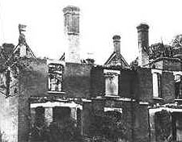
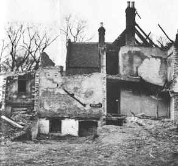

Situé dans l'Essex
(Angleterre), près de la rivière Stour, le presbytère de Borley n'est pas un bâtiment très ancien. Il est
construit par le révérent Henry Bull. Par contre, on sait que le site sur lequel il est construit
date du Moyen Âge. Il hébergea un prieuré, probalement cirstercien. On sait également qu'un trésor s'y trouve
certainement : à la dissolution des monastères, les biens considérables du prieuré ne sont pas confisqués,
soigneusement cachés par le prieur et ses moines.
Le site a également la réputation d'être hanté. On dit qu'une novice, du couvent de Bures, et un jeune moine du
Prieuré de Borley tombèrent amoureux. Ils furent surpris alors qu'ils s'échappaient dans une charette. Le jeune moine
est puni de mort, et la jeune nonne fut condamnée a êêmurée vivante dans la crypte sous le prieuré.
Le révérend Lionel Foyster et sa femme Marianne, eménagèrent au presbytère le 1930-10-16. Il le quittèrent cinq and
plus tard. Durant leur séjour, plus de 2000 événements paranormaux seraient survenus. Des années plus tard, Marianne
discuta combien de ces événements pourraient être eêeacute;s de manière naturelle mais elle ne put tous les expliquer,
y compris certaines inscriptions sur les murs.
Gregson
Le
capitaine William Gregson et sa famille furent les derniers à vivre au presbytère. Gregson achète le bâtiment en
pleine connaissance de sa sulfureuse réputation, et tout aussi pleinement sceptique. Il va changer d'avis.
Son fils Alan fut peut-être le dernier t&êmoin vivant de la zone de l'époque de Borley. Alan confia ses souvenirs
dans une lettre à un enquêteur sur les fantôêichard Lee. Un autre fils, Anthony, confia a Lee une version
différente.
Le feu (1939)
Le presbytère de Borley fut détruit
par le feu durant la nuit du 1939-02-27 au 1939-02-28.
L'église
Après le feu, les fantômes se seraient manifestés en face de la route, dans l'église de Borley.
Photographies
Il existe plusieurs photos étranges prises à Borley. Parmi
elles, celle fameuse d'une "brique flottante", prise par un photographe du magazine Life visitant les ruines le
5 Avril 1944 en compagnie de Harry Price. Certains y voient un esprit portant l'objet, d'autres une brique prise en
train de chuter, quelqu'un l'ayant faite tomber.
En 1955, Picture Post publia une photographie de Thurston Hopkins. Celle-ci fut réimprimée par Two Worlds le 28
Janvier 1956.
Simon Marsden également une photo mystérieuse derrière l'église en 1974.
Ray Armes prit une photo le 1975-07-28 où certains voient un vieux petit homme voûté.
David Bamber prit une photo en 1995 semblant montrer Harry Price par-dessus une pierre tombale si vous regarder de
près. Il revint en 1999, avec une photo de ce qui semblait être une silhouette dans les arbres. Le photographe Dick
Gee ne peut expliquer pourquoi une photo qu'il a prit dans l'église a une sorte de "brouillard" en son milieu.
 Situé dans l'Essex
(Angleterre), près de la rivière Stour, le presbytère de Borley n'est pas un bâtiment très ancien. Il est
construit par le révérent Henry Bull. Par contre, on sait que le site sur lequel il est construit
date du Moyen Âge. Il hébergea un prieuré, probalement cirstercien. On sait également qu'un trésor s'y trouve
certainement : à la dissolution des monastères, les biens considérables du prieuré ne sont pas confisqués,
soigneusement cachés par le prieur et ses moines.
Situé dans l'Essex
(Angleterre), près de la rivière Stour, le presbytère de Borley n'est pas un bâtiment très ancien. Il est
construit par le révérent Henry Bull. Par contre, on sait que le site sur lequel il est construit
date du Moyen Âge. Il hébergea un prieuré, probalement cirstercien. On sait également qu'un trésor s'y trouve
certainement : à la dissolution des monastères, les biens considérables du prieuré ne sont pas confisqués,
soigneusement cachés par le prieur et ses moines. Le
capitaine William Gregson et sa famille furent les derniers à vivre au presbytère. Gregson achète le bâtiment en
pleine connaissance de sa sulfureuse réputation, et tout aussi pleinement sceptique. Il va changer d'avis.
Le
capitaine William Gregson et sa famille furent les derniers à vivre au presbytère. Gregson achète le bâtiment en
pleine connaissance de sa sulfureuse réputation, et tout aussi pleinement sceptique. Il va changer d'avis.{kind=link}